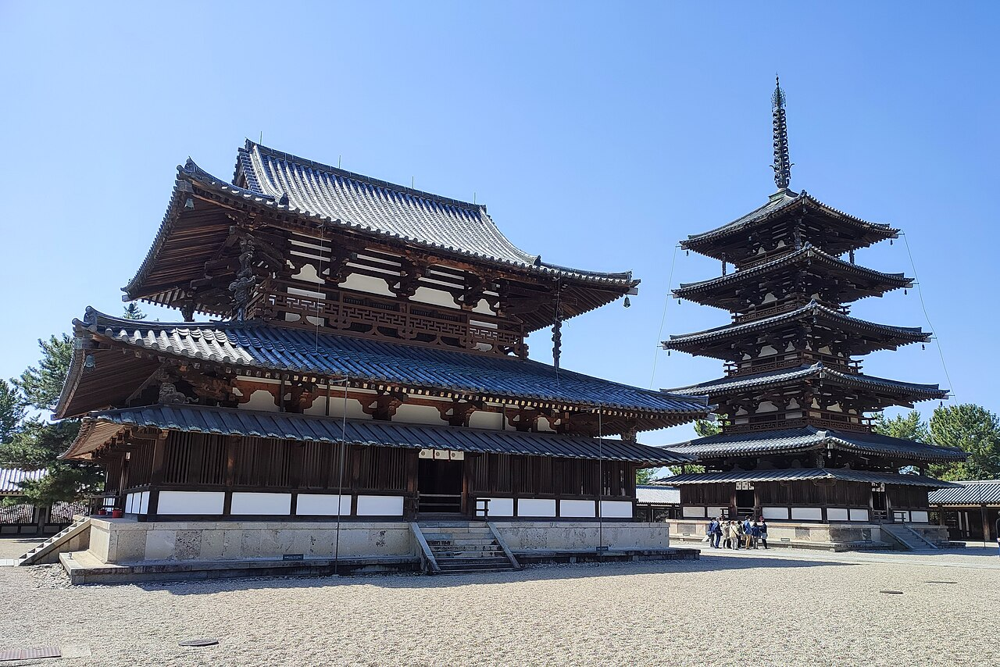
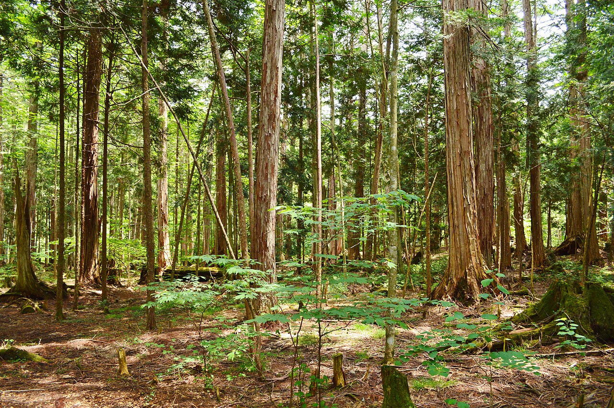
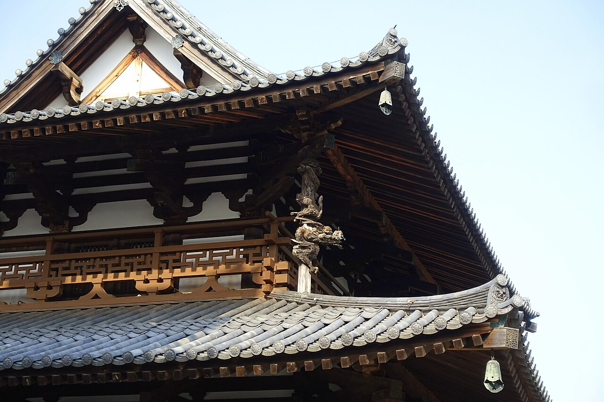
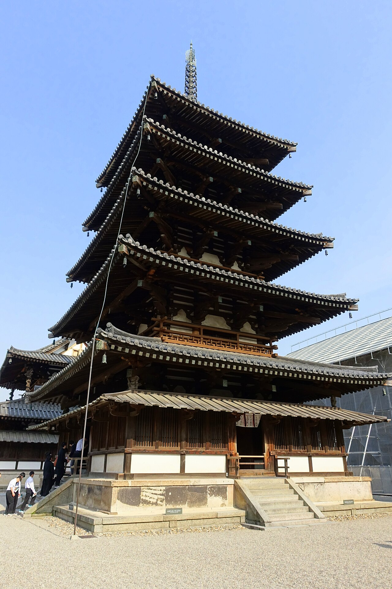
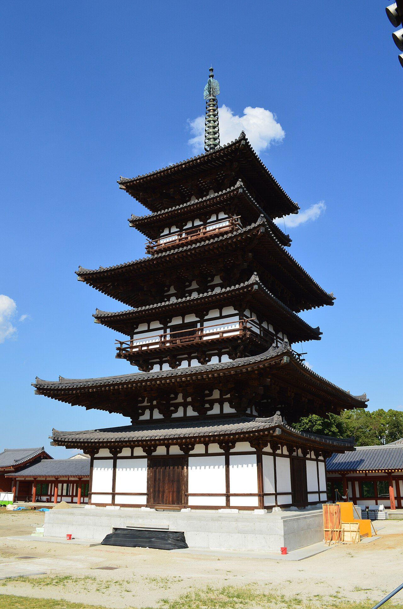
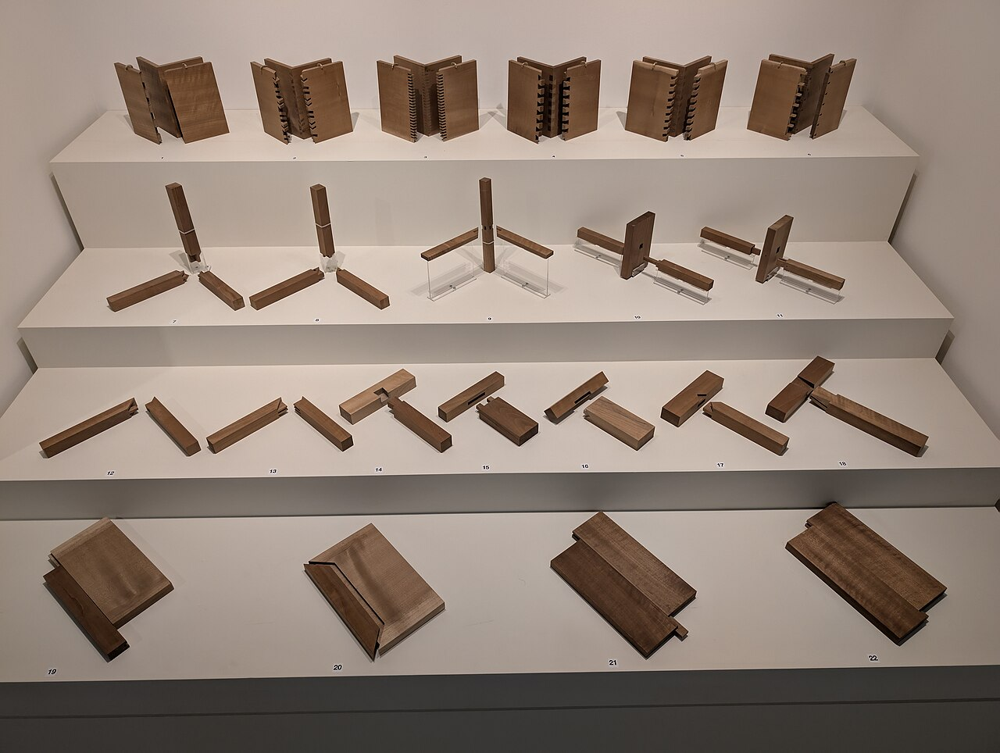
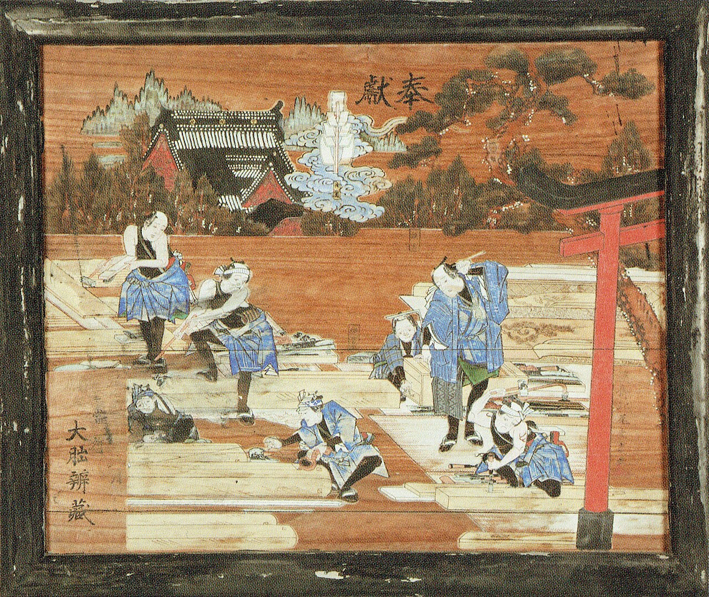
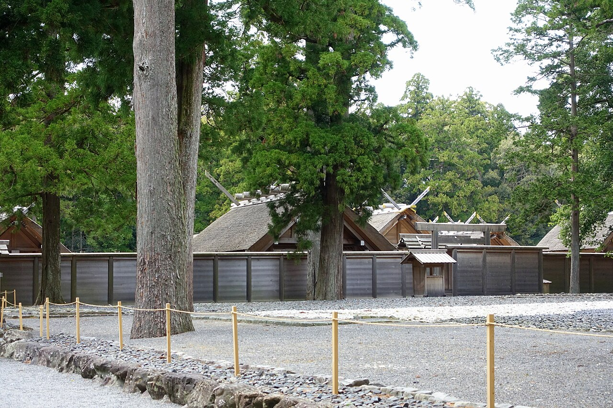

文化・暮らし Culture日本の木造建築は、なぜ長く残る？
1300年ほど前に建てられたとされる木の建物が、奈良にはいまも立っています。腐る、燃える、虫に食われる──弱点の多い木が、なぜこれほど長もちするのか。五重塔の断面図、木を組む「継手」の図、建ってからの年数のグラフで、そのしくみをのぞいてみませんか。
2026.10.24 UP 約5分で読める 文：SOMOSOMO編集部
写真：法隆寺の金堂と五重塔／ONO Masanobu（2022年、CC0）
奈良県斑鳩町（いかるがちょう）、1993年12月。法隆寺は、日本で最初に登録された世界遺産のひとつになりました。このとき、境内に並ぶ金堂（本尊をまつるお堂）と五重塔は、すでに1300年近く立っていました。
『日本書紀』によれば、法隆寺は670年に火事で焼けています。いまの建物はそのあと、8世紀の初めごろまでに建て直されたとする説が有力で、現存する世界最古級の木造建築とされています。
木は、石やレンガにくらべると弱点の多い材料です。水を吸えば腐り、火がつけば燃え、シロアリにも食われます。それなのに、木の建物はなぜこんなに長く残るのでしょうか。
In a word
腐りにくい木を選び 、屋根と石で水から遠ざけ 、揺れを受け流すつくり にして、傷んだところはほどいて直し続けてきた からです。
01
The Right Wood
長もちの第一歩は、木を選ぶこと
法隆寺の建物に多く使われているのは、ヒノキです。日本にしか自然に生えない針葉樹で、まっすぐ大きく育ち、加工もしやすい木です。昔から寺や神社、宮殿の材料として選ばれてきました。
木は切ったら弱くなる一方、と思うかもしれません。ところがヒノキには、切られてから数百年は少しずつ強くなり、そのあとゆっくり弱くなる という説があります。ただし、古い木で強さを確かめた例はまだ少なく、研究が続いています。
この説は、法隆寺の古い木材を調べた木材学者の小原二郎（こはら じろう）が、宮大工（寺や神社を建てる大工）の西岡常一（にしおか つねかず）との共著などで紹介しています。

ヒノキの森として知られる場所 長野県上松町（あげまつまち）の赤沢自然休養林。木曽ヒノキの天然林で知られ、1985年には伊勢神宮の建て替えに使う木が、ここから運び出されました。写真：Akasawa Natural Recreational Forest-1 ／Saigen Jiro（2017年、CC0）
02
Keep It Dry
木を腐らせる水を、屋根と石で遠ざける
木を腐らせるのは、カビやキノコのなかまの「木材腐朽菌（ふきゅうきん）」です。この菌は、湿った木の中で増えます。逆にいえば、木を乾いたままにしておけば、腐りはなかなか進みません。
そこで役に立つのが、壁よりずっと外へ張り出した深い軒（のき）です。雨が柱や壁に直接当たりにくくなります。重い軒の先は、柱の上に組み上げた「組物（くみもの）」という木の部品の集まりが支えています。

壁よりずっと外へ張り出す軒 法隆寺金堂の、上の屋根。軒が壁から大きく張り出しているので、雨が柱や壁にかかりにくくなります。龍の彫刻の柱は、のちの修理で足された補強です。写真：Golden Hall - Hōryū-ji ／Daderot（2018年、CC0）
柱の足もとにも工夫があります。法隆寺の金堂などの柱は、地面に埋めずに、礎石（そせき）という石の上に立てられています。柱が地面にじかに触れないので、湿気を吸い上げにくくなります。
その大切さは、例外からもわかります。五重塔の中心を貫く心柱（しんばしら）は、根元が土に埋められていました。戦後の修理のとき、根元は腐って、下から2mほどがつり鐘のような空洞になっていました。 腐った部分は切り取られ、新しい木を継ぎ足す「根継ぎ（ねつぎ）」で直されました。
03
Bend, Don't Break
五重塔は、なぜ地震で倒れない？
日本は地震の多い国ですが、木造の五重塔が地震で倒れた例は、ほとんど知られていません。そのつくりには、はっきりした特徴があります。各層の柱は、下の層の柱とつながっていない のです。上の層は、下の層の上に乗っているだけです。
根元が空洞になっても塔が平気で立っていたのは、心柱が屋根や床の重さを受け持つ柱ではないからだとされます。塔は、芯の通った「積み重ねた箱」のようなものなのです。
Fig.01 五重塔の中は、どうなっている？
心柱（しんばしら） 塔の中心を貫く柱。てっぺんの飾り（相輪）を支えますが、屋根や床の重さは受け持っていないとされます。法隆寺では、もとは根元が土に埋まっていました。深い軒（のき） 壁より大きく張り出した屋根。雨から柱や壁を守ります。組物（くみもの） 柱の上で木を組み重ねた部品。重い軒の先を支えます。各層の柱 層ごとに分かれていて、上下の柱はつながっていません。礎石（そせき） 柱の足もとの石。柱を地面から離して、湿気から守ります。
見どころは、黒い太線で描いた各層の柱が、上下でつながっていないこと。各層は下の層の上に乗っているだけで、そのまん中を赤い心柱が貫いています。形は実物を単純にした模式図です。
では、なぜ倒れにくいのか。これには、いくつかの説があります。積み重ねた層が少しずつずれて揺れを受け流す。組物や継ぎ目がこすれ合って、揺れの勢いを弱める。中心の心柱がどう働くのかも含めて、まだ決着はついていません。
大きく張り出した軒が、やじろべえのように釣り合いをとるという見方もあります。柱より外へ突き出た軒の重さと、柱より内側にかかる屋根の重さが、柱をはさんで釣り合うというわけです。


1300年ほどを生きてきた、2つの塔 左は法隆寺の五重塔。右は730年に完成したとされる薬師寺の東塔で、実は三重の塔です。屋根の間に「裳階（もこし）」という小さな屋根があるため、六重に見えます。写真：Five-storied Pagoda - Hōryū-ji ／Daderot（2018年、CC0）、Yakushi-ji, totou ／Saigen Jiro（2020年、CC0）
04
Take It Apart
古くなったら、ほどいて組み直す
日本の伝統的な木造建築は、釘をほとんど使わず、木と木を刻んで組み合わせてつくられてきました。木を長さの方向につなぐ「継手（つぎて）」と、角度をつけて組む「仕口（しぐち）」です。
Fig.02 釘を使わずに、木と木をつなぐ
継手：長さをのばす
上から
鎌継ぎ（かまつぎ）の例
頭が首より広いので、
引っぱっても抜けない
仕口：角度をつけて組む
ほぞ
ほぞ穴
ほぞ差しの例
ほぞを柱の穴に差し込む
見どころは赤い出っぱり。刻んだ形どうしがかみ合うので、釘がなくても抜けにくくなります。実際の継手・仕口はもっと複雑で、種類もたくさんあります。
組んだものは、ほどくこともできます。だから傷んだ建物は、いったん部材をばらばらにし、腐った部分を切り取って新しい木を継いだり、部材ごと取り替えたりして、もう一度組み直せます。これを「解体修理」といいます。第2章で見た心柱の根継ぎも、その一つです。
薬師寺の東塔では2012年、屋根瓦から木の部材、土台の基壇まですべてを取り外す修理が本格的に始まりました。前回の解体修理（1898〜1900年）から約110年ぶりです。法隆寺でも1934年に「昭和の大修理」が始まり、戦争をはさんで1985年まで続きました。


刻んで組む技と、それを担った人たち 左は、家具などをつくる「指物（さしもの）」の継ぎ方の見本で、ロンドンでの展示です。建物の継手とは別の技ですが、刻んでかみ合わせる考え方は同じです。右は1864年に群馬県の神社に奉納された大工の絵馬です。写真：Sashimono joinery ／Andy Li（2025年、CC0）、大工絵馬 ／渓齋北尾重光（1864年、パブリックドメイン）
ほどいて直すのとは逆に、まるごと建て直して受け継いできた建物もあります。伊勢神宮では、20年に一度、となりの敷地に社殿を同じ形で建て直す「式年遷宮（しきねんせんぐう）」が続いています。
内宮（ないくう）では690年に始まり、戦国時代に120年以上とだえた時期をはさんで、2013年に62回目が行われました。20年ごとに建て直すことで、建て方の技が世代から世代へ伝えられてきたといわれます。
2020年には、木造の建物を守り伝えるための17の伝統技術が、「伝統建築工匠（こうしょう）の技」としてユネスコの無形文化遺産に登録されました。

いまの社殿と、次の建て替えを待つ敷地 伊勢神宮の外宮（げくう）。塀の奥にかやぶき屋根の社殿が見え、手前の石を敷いた広場が、次の建て替えに使う「古殿地（こでんち）」です。2つの敷地を、20年ごとに交互に使います。写真：Goshoden and Kodenchi - Geku, Ise Shrine ／Daderot（2018年、CC0）
一方で、同じ建物を千年以上使い続けている例もあります。京都の醍醐寺（だいごじ）の五重塔は951年の完成。戦乱の火でふもとの伽藍（下醍醐）がほとんど焼けたときも、この塔は残りました。
Fig.03 建ってから、何年たった？
法隆寺の金堂・五重塔 約1,300年
薬師寺の東塔 1,296年
醍醐寺の五重塔 1,075年
伊勢神宮・内宮の正殿 13年
見どころは、いちばん下の赤い棒の短さ。伊勢神宮は長い歴史をもちながら、建物そのものは2013年に建ったばかりです。年数は2026年の時点。法隆寺は、670年の火事のあと8世紀初めごろまでに再建されたとする説によります。
05
By the Numbers
400年生きた木が、1300年立ち続ける
400年以上 法隆寺五重塔の心柱になったヒノキが、切られるまでに生きた年数小原二郎の推定は422〜455年
約 3割 清水寺で374年使われたヒノキの古材。押しつぶす力への強さが、木材の標準的な値より大きかった割合立命館大学の研究（2008年）。曲げの強さは標準並み
1万本以上 1回の式年遷宮で使われるヒノキの数神宮式年遷宮（Wikipedia 日本語版）による
Here's the Fun Part
ここが面白い！
2001年2月、奈良国立文化財研究所が、法隆寺五重塔の心柱の年輪を調べた結果を発表しました。木が切られたのは594年ごろ。『日本書紀』が法隆寺の火事を記す670年より、70年以上も前です。
いまの五重塔が火事のあとに建て直されたものなら、なぜそんなに古い木が使われているのでしょうか。前の建物の材を使い回した、切ってから長く蓄えていた など、いくつもの説があり、答えは出ていません。年代の出し方そのものに慎重な意見もあります。
木の建物は、建てた日から寿命を数え始めるとはかぎらないのです。古いお寺を訪ねたら、柱の足もとや、木を継ぎ足した跡を探してみてください。何百年も手を入れてきた跡が、見つかるかもしれません。
出典・参考
Hōryū-ji （Wikipedia 英語版）：607年の創建、『日本書紀』の670年の焼失、711年ごろまでに再建とされる、2001年の年輪調査で心柱は594年伐採、金堂は世界最古の木造建築として広く認められている、1993年に世界遺産法隆寺 （Wikipedia 日本語版）：1993年12月9日に世界遺産登録、金堂上層の龍の彫刻のある支柱は修理の際に付加、昭和の大修理は1934年に始まり1985年に完成、再建・非再建論争法隆寺五重塔心柱の円盤の履歴 （小原二郎、木材研究・資料 第38号、2002年）：心柱は掘立式で基部が土中にあり、基部が腐って空洞に（切り取った下部約2mはつり鐘状の空洞）、戦後の修理で根継ぎ、樹齢は422〜455年と推定、2001年2月に奈良国立文化財研究所が伐採年594年と発表、伐採年は「推定」とすべきとの意見伝統木造建築物に用いられた古材の強度劣化および劣化非破壊検査法 （大岡優ほか、歴史都市防災論文集 Vol.2、2008年）：ヒノキは構造材となってから数百年は強度が上昇しその後緩やかに低下するとされる（西岡常一・小原二郎『法隆寺を支えた木』NHKブックス、1978年）、データが少なく古材の強度特性はいまだ明らかでない、清水寺で374年使われたヒノキ古材の縦圧縮強さは平均51.3MPaで木材工業ハンドブックの値（40MPa）より28%大きく、曲げはハンドブックの値と同程度ヒノキ （Wikipedia 日本語版）：日本の固有種、加工しやすく寺社や宮殿に使われてきた、伐採後に強度が上がるとされる赤沢自然休養林 （Wikipedia 日本語版）：長野県上松町、木曽ヒノキの天然林、伊勢神宮の用材を産出、1985年に遷宮の用材の運び出しWood-decay fungus （Wikipedia 英語版）：木材腐朽菌が木を腐らせ、増えるには水分が必要Japanese Buddhist architecture （Wikipedia 英語版）：軒は壁より大きく張り出し、その重さを組物（斗栱）が支えるPagoda （Wikipedia 英語版）：日本の木造の塔は地震で壊れていない、理由とされる説（組物の摩擦による減衰、構造的に分かれた各層、やじろべえのような軒、心柱）五重塔 （Wikipedia 日本語版）：地震で倒壊した例がない、心柱の役割は諸説Yakushi-ji （Wikipedia 英語版）：東塔は730年完成、1898〜1900年に解体修理Dismantling and Repair of the East Pagoda of Yakushiji Temple （東京文化財研究所、2012年6月）：2012年6月4日に本格的な解体が始まった、約110年ぶりの解体、瓦・木部・基壇をすべて取り外し、傷んだ部分を直して組み直すJapanese carpentry （Wikipedia 英語版）：木の継ぎ方を使い、釘をほとんど使わない式年遷宮 （神宮）：20年に一度すべてを新しくする、持統天皇4年（690年）から1300年以上続く、2013年に62回目神宮式年遷宮 （Wikipedia 日本語版）：690年に始まり、戦国時代に120年以上中断、1回に1万本以上のヒノキを使う、江戸時代からは木曽の用材Ise Grand Shrine （Wikipedia 英語版）：20年ごとにとなりの敷地へ建て替え、次に建てる敷地を古殿地という、2013年の社殿は62代目、建て替えは建築の技を世代から世代へ伝える方法でもある「伝統建築工匠の技：木造建造物を受け継ぐための伝統技術」のユネスコ無形文化遺産登録 （文化庁）：2020年12月に登録、選定保存技術17件で構成Daigo-ji （Wikipedia 英語版）：五重塔は951年完成、京都府最古の木造建築、応仁の乱で下醍醐が焼けたときも五重塔は残った写真：すべてパブリックドメインまたは CC0。クレジットはそれぞれの写真の下に記しています